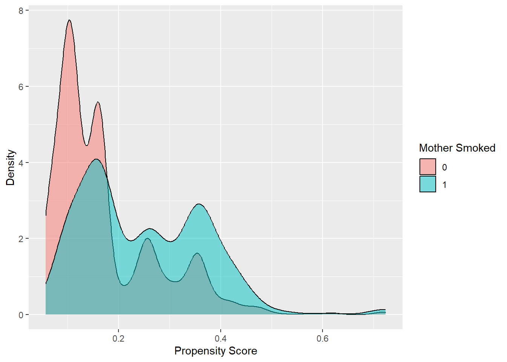
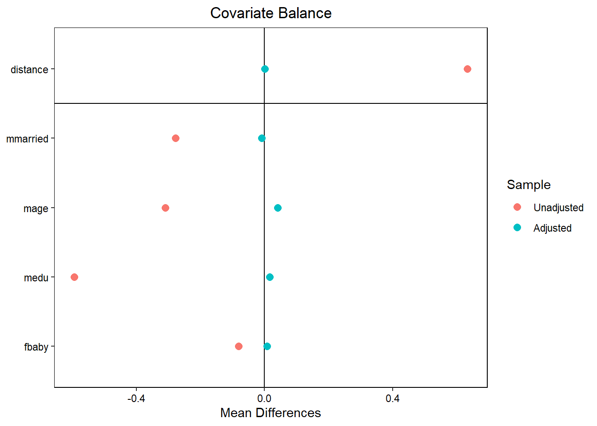
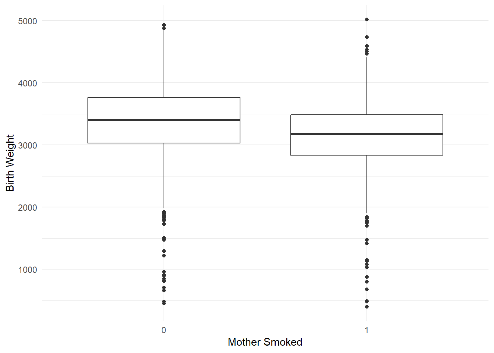

# Load necessary libraries
#install.packages("tableone")
#install.packages("pastecs")
library(MatchIt)
library(dplyr)
library(ggplot2)
library(pastecs)
library(tableone)
library(cobalt)
# Read the dataset
birth_weight <- read.csv("Datasets/Birth_Weight.csv")
"
The original dataset included nearly 500,000 births.
This dataset is a subset of 4,642 births that includes information about infant/mother/father characteristics from singleton births in Pennsylvania between 1989 and 1991.
"[1] "\nThe original dataset included nearly 500,000 births. \nThis dataset is a subset of 4,642 births that includes information about infant/mother/father characteristics from singleton births in Pennsylvania between 1989 and 1991. \n"# Recode variables
birth_weight <- birth_weight %>% dplyr::mutate(
mmarried = as.integer(mmarried == "Married"), # 1 if Married, 0 otherwise
fbaby = as.integer(fbaby == "Yes"), # 1 if Yes, 0 otherwise
mbsmoke = as.integer(mbsmoke == "Smoker") # 1 if Smoker, 0 otherwise
)
# Perform OLS regression
ols_model <- lm(bweight ~ mbsmoke + mmarried + mage + medu + fbaby, data = birth_weight)
summary(ols_model)
Call:
lm(formula = bweight ~ mbsmoke + mmarried + mage + medu + fbaby,
data = birth_weight)
Residuals:
Min 1Q Median 3Q Max
-3077.47 -307.53 27.86 345.61 1997.40
Coefficients:
Estimate Std. Error t value Pr(>|t|)
(Intercept) 3203.8723 53.8854 59.457 < 2e-16 ***
mbsmoke -224.4220 22.0791 -10.164 < 2e-16 ***
mmarried 159.1408 20.9232 7.606 3.4e-14 ***
mage 0.4146 1.8213 0.228 0.81992
medu 7.9143 3.7539 2.108 0.03506 *
fbaby -52.9520 17.8149 -2.972 0.00297 **
---
Signif. codes: 0 '***' 0.001 '**' 0.01 '*' 0.05 '.' 0.1 ' ' 1
Residual standard error: 562.4 on 4636 degrees of freedom
Multiple R-squared: 0.05709, Adjusted R-squared: 0.05608
F-statistic: 56.14 on 5 and 4636 DF, p-value: < 2.2e-16# Estimate propensity scores using logistic regression
ps_model <- glm(mbsmoke ~ mmarried + mage + medu + fbaby, family = binomial(), data = birth_weight)
birth_weight$pscore <- predict(ps_model, type = "response")
# Diagnose the overlap in propensity scores
ggplot(birth_weight, aes(x = pscore, fill = as.factor(mbsmoke))) +
geom_density(alpha = 0.5) +
labs(fill = "Mother Smoked", x = "Propensity Score", y = "Density")
# Perform nearest neighbor matching
match_nearest <- matchit(mbsmoke ~ mmarried + mage + medu + fbaby, method = "nearest", data = birth_weight)
# Assess covariate balance before and after matching
bal.tab(match_nearest, un = TRUE) # Before matchingBalance Measures
Type Diff.Un Diff.Adj
distance Distance 0.6345 0.0012
mmarried Binary -0.2781 -0.0093
mage Contin. -0.3101 0.0406
medu Contin. -0.5955 0.0155
fbaby Binary -0.0816 0.0081
Sample sizes
Control Treated
All 3778 864
Matched 864 864
Unmatched 2914 0bal.tab(match_nearest, un = FALSE) # After matchingBalance Measures
Type Diff.Adj
distance Distance 0.0012
mmarried Binary -0.0093
mage Contin. 0.0406
medu Contin. 0.0155
fbaby Binary 0.0081
Sample sizes
Control Treated
All 3778 864
Matched 864 864
Unmatched 2914 0# Estimate the ATT using the matched sample
matched_data <- match.data(match_nearest)
t.test(bweight ~ mbsmoke, data = matched_data)
Welch Two Sample t-test
data: bweight by mbsmoke
t = 8.0542, df = 1706.1, p-value = 1.487e-15
alternative hypothesis: true difference in means between group 0 and group 1 is not equal to 0
95 percent confidence interval:
174.0801 286.1560
sample estimates:
mean in group 0 mean in group 1
3367.778 3137.660 # Density plot for propensity score overlap
ggplot(birth_weight, aes(x = pscore, fill = as.factor(mbsmoke))) +
geom_density(alpha = 0.5) +
labs(fill = "Mother Smoked", x = "Propensity Score", y = "Density")
# Covariate balance plot
love.plot(match_nearest)
# Boxplot for birth weight distribution comparison
ggplot(matched_data, aes(x = as.factor(mbsmoke), y = bweight)) +
geom_boxplot() +
labs(x = "Mother Smoked", y = "Birth Weight") +
theme_minimal()
# OLS Estimation on the Full Dataset
ols_full <- lm(bweight ~ mbsmoke + mmarried + mage + medu + fbaby, data = birth_weight)
summary(ols_full)
Call:
lm(formula = bweight ~ mbsmoke + mmarried + mage + medu + fbaby,
data = birth_weight)
Residuals:
Min 1Q Median 3Q Max
-3077.47 -307.53 27.86 345.61 1997.40
Coefficients:
Estimate Std. Error t value Pr(>|t|)
(Intercept) 3203.8723 53.8854 59.457 < 2e-16 ***
mbsmoke -224.4220 22.0791 -10.164 < 2e-16 ***
mmarried 159.1408 20.9232 7.606 3.4e-14 ***
mage 0.4146 1.8213 0.228 0.81992
medu 7.9143 3.7539 2.108 0.03506 *
fbaby -52.9520 17.8149 -2.972 0.00297 **
---
Signif. codes: 0 '***' 0.001 '**' 0.01 '*' 0.05 '.' 0.1 ' ' 1
Residual standard error: 562.4 on 4636 degrees of freedom
Multiple R-squared: 0.05709, Adjusted R-squared: 0.05608
F-statistic: 56.14 on 5 and 4636 DF, p-value: < 2.2e-16# OLS Estimation on the Dataset after PSM
matched_data <- match.data(match_nearest)
ols_matched <- lm(bweight ~ mbsmoke + mmarried + mage + medu + fbaby, data = matched_data)
summary(ols_matched)
Call:
lm(formula = bweight ~ mbsmoke + mmarried + mage + medu + fbaby,
data = matched_data)
Residuals:
Min 1Q Median 3Q Max
-2949.06 -311.67 27.35 366.61 1927.68
Coefficients:
Estimate Std. Error t value Pr(>|t|)
(Intercept) 3320.890 94.566 35.117 < 2e-16 ***
mbsmoke -227.907 28.379 -8.031 1.78e-15 ***
mmarried 152.587 30.775 4.958 7.82e-07 ***
mage -4.496 3.012 -1.493 0.136
medu 7.705 6.760 1.140 0.255
fbaby -10.990 30.995 -0.355 0.723
---
Signif. codes: 0 '***' 0.001 '**' 0.01 '*' 0.05 '.' 0.1 ' ' 1
Residual standard error: 589.6 on 1722 degrees of freedom
Multiple R-squared: 0.0522, Adjusted R-squared: 0.04945
F-statistic: 18.97 on 5 and 1722 DF, p-value: < 2.2e-16# Comparison of Results
# We can look at the coefficients and their significance in both models
print("OLS Results on the Full Dataset:")[1] "OLS Results on the Full Dataset:"print(summary(ols_full)$coefficients) Estimate Std. Error t value Pr(>|t|)
(Intercept) 3203.8722877 53.885444 59.4571006 0.000000e+00
mbsmoke -224.4219811 22.079084 -10.1644605 5.093401e-24
mmarried 159.1408364 20.923241 7.6059363 3.403753e-14
mage 0.4146478 1.821294 0.2276665 8.199155e-01
medu 7.9142617 3.753915 2.1082685 3.506130e-02
fbaby -52.9519737 17.814899 -2.9723421 2.970568e-03print("OLS Results on the Matched Dataset:")[1] "OLS Results on the Matched Dataset:"print(summary(ols_matched)$coefficients) Estimate Std. Error t value Pr(>|t|)
(Intercept) 3320.890420 94.565811 35.1172415 3.310613e-204
mbsmoke -227.906903 28.379153 -8.0307858 1.777928e-15
mmarried 152.586584 30.774624 4.9581949 7.815545e-07
mage -4.495996 3.011627 -1.4928797 1.356519e-01
medu 7.704965 6.759770 1.1398266 2.545171e-01
fbaby -10.990213 30.995113 -0.3545789 7.229485e-01# Analysis of OLS Results - Full Dataset vs Matched Dataset
# Consistency in the Effect of Maternal Smoking:
# Both the full dataset OLS model and the matched dataset OLS model consistently show a significant reduction in birth weight associated with maternal smoking.
# The coefficients (-224.42 in the full dataset and -227.91 in the matched dataset) suggest a robust negative effect of maternal smoking on birth weight.
# This finding across both models reinforces the evidence of a negative impact of smoking during pregnancy on infant birth weight.
# Differences in Other Factors:
# There are notable differences in the results for other factors (especially maternal age 'mage', maternal education 'medu', and previous baby 'fbaby') between the full dataset and the matched dataset models.
# In the matched dataset, the effects of maternal age, education, and having a previous baby are not statistically significant, which contrasts with the findings from the full dataset.
# This suggests that the propensity score matching process has achieved a better balance of these covariables between the treated and untreated groups, potentially reducing confounding bias.
# Specifically, the reduction in significance of factors like maternal age and education in the matched dataset indicates that the matching might have controlled for these variables more effectively, highlighting the importance of considering matching techniques in observational studies to understand causal relationships.